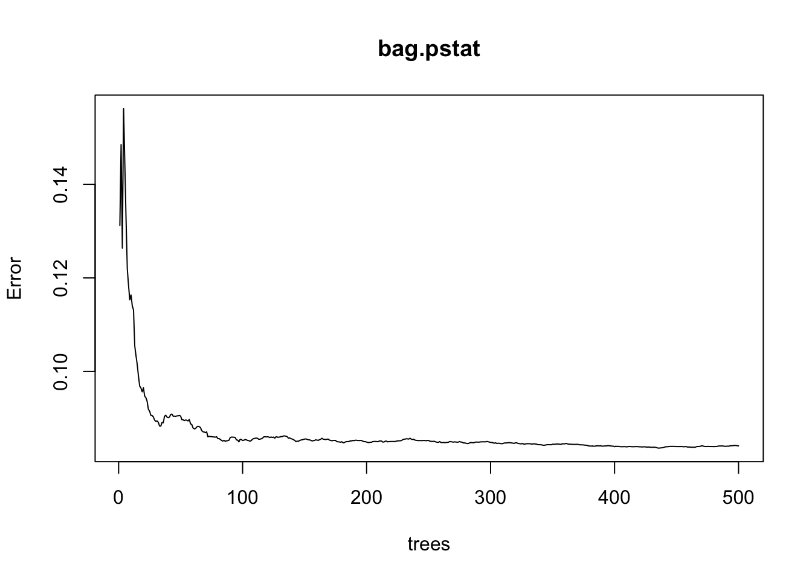
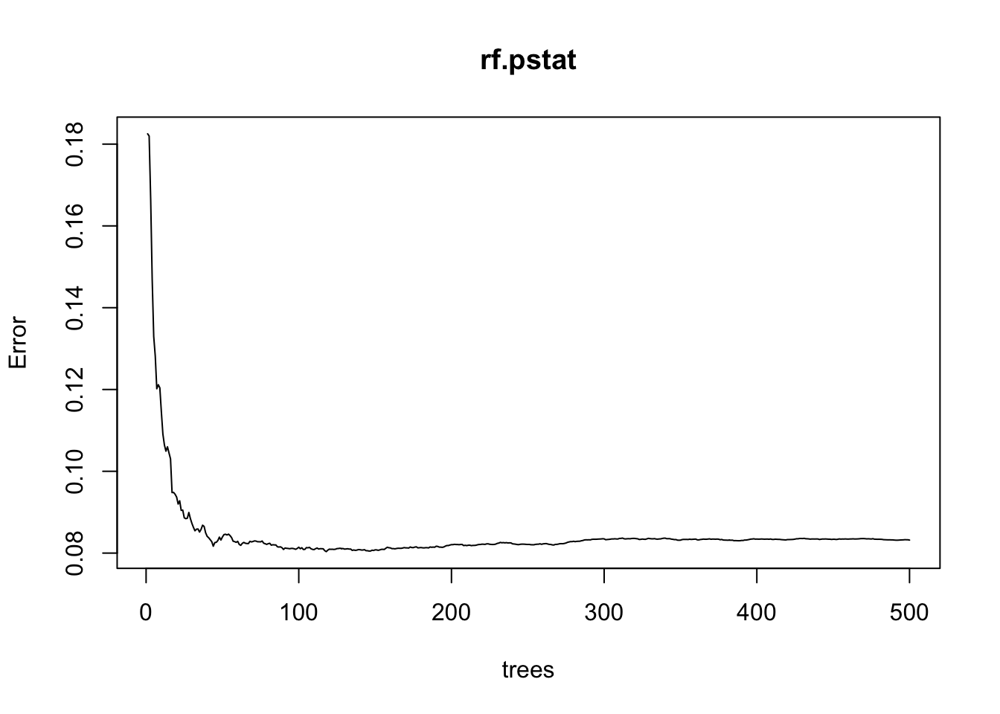

#library(imager)
#bootstrap_diagram <- load.image("/Users/sharanya/Documents/GitHub/vignette-bootstrapping/images/bootstrap-diagram.png")
#plot(bootstrap_diagram, axes=FALSE)vignette-bootstrapping
Bootstrapping Vignette
Authors: Sarah Liang, Sharanya Sharma, Dannah Golich, Jason Siu
Bootstrap Introduction
In an ideal scenario, statisticians will have an adequate amount of data that can then be divided into training data, validation data, and test data in order to make the most accurate predictions. However, there are many situations in which there is not a sufficient amount of data that can be divided into these three categories. In such cases, certain re-sampling techniques can be used to provide sufficient data. One such re-sampling technique is called bootstrap. In bootstrapping, a large number of subsets of equal size are taken from the original dataset. Each of the selected subsets are chosen through random sampling, without replacement. The observations not selected are called Out-Of-Bag, which can be used to estimate test error without the use of cross validation. Approximately 1/3 of the observations tend to be Out-of-Bag. From the subsets that are chosen, the same statistical method is then fit on each of these subsets. For regression purposes, the mini models are combined by averaging the results, whereas in classification the mode is taken.
Bootstrap Diagram
In the above example, the dataset only has 3 observations, thus bootstrapping should be used to create a sufficient amount of data for regression. The total dataset of 3 observations is sampled 3 times without replacement to acquire the first bootstrap sample. This process is repeated “B” times to acquire B total bootstrap samples. Each sample is then fit to a statistical model, resulting in B number of models: \(\hat{f}^{*1}... \hat{f}^{*B}\). The mini models are then aggregated to form one model. This bootstrap aggregating method is known as Bagging.Image Reference: Yu, Guo. “Lecture 8: Cross-Validation & Bootstrap”, PSTAT-131/231: Introduction to Statistical Machine Learning, Oct.26, 2023, UC Santa Barbara.## Bootstrap Sampling Technique{r}# store each bootstrap iteration in a listsample_list <- list()# n=1000 bootstrap samplesfor(i in 1:1000){ sample_list[[i]] <- sample(c(1:1000), size = 1000, replace = TRUE)}head(sample_list)The head function prints the first 6 bootstrap samples. We can see that each of these bootstrap samples include 1000 randomly sampled numbers without replacement from the original 1000 observations. The entire sample_list is populated with 1000 samples, where each sample holds 1000 observations.## Out-Of-Bag Probability{r}# select a random number to test ratio of missing observationsrandom_num <- sample(c(1:1000), size = 1, replace = TRUE)# calculating out-of-bag probability count <- 0for(i in 1:1000){ if(random_num %in% unique(sample_list[[i]])){ count = count + 1 }}probability <- 1-(count/1000.0)probabilityRun this code chunk multiple times to see how the probability changes. We can see that each time the probability is close to 1/3.
Sarah - random forest below
Objectives: Understand how bootstrapping works on smaller and larger data sets; Understand what bagging requires of the parameters of a random forest model; Understand the effect of bootstrapping and bagging on tree models (e.g. random forest)
Bagging, or bootstrap aggregating, regression trees increase prediction power of single tree models that have high variance and poor prediction.\(^1\) However, bagging regression trees suffer from tree correlation. We can solve this issue be using random forests, which are a modification of bagging that implements a larger set of de-correlated trees.
## load necessary packages
library(dplyr)
#install.packages("randomForest")
library(randomForest)
# install.packages("tree")
library(gbm)
library(ISLR)
library(tree)
library(tidyverse)
library(tidymodels)
library(stringr)
library(rpart)Let’s examine how bagging affects a prediction problem by implementing bagging and compare to a normal random forest.
Setup
We will use courseGrades data set. This data set includes the number of students receiving each letter grade from Fall 2009 to Summer 2023 at UCSB in wide form.\(^2\) We preprocessed previously to extract PSTAT course data.
We choose avgGPA as our response variable.
# load course grades data set
grade.raw <- read_csv('data/courseGrades.csv')
head(grade.raw)# A tibble: 6 × 25
...1 course instructor quarter year A B C D F
<dbl> <chr> <chr> <chr> <dbl> <dbl> <dbl> <dbl> <dbl> <dbl>
1 0 WRIT 501B DEAN C W Fall 2009 0 0 0 0 0
2 1 WRIT 500 BROWNING R Fall 2009 0 0 0 0 0
3 2 WRIT 109ST BRADLEY N D Fall 2009 19 0 0 0 2
4 3 WRIT 109ST LUNSFORD K J Fall 2009 8 1 0 0 1
5 4 WRIT 109SS PETRACCA M F Fall 2009 13 2 0 1 0
6 5 WRIT 109L EK A A Fall 2009 1 9 0 0 0
# ℹ 15 more variables: nLetterStudents <dbl>, nPNPStudents <dbl>, avgGPA <dbl>,
# P <dbl>, dept <chr>, S <dbl>, su <dbl>, Ap <dbl>, Bp <dbl>, Cp <dbl>,
# Dp <dbl>, Am <dbl>, Bm <dbl>, Cm <dbl>, Dm <dbl># preprocess
grade <- grade.raw %>%
filter(nLetterStudents != 0) %>%
select(course, instructor, quarter, year, nLetterStudents, dept, avgGPA) %>%
mutate(course = str_replace_all(course, "\\s+", " "))
pstat <- grade %>%
filter(!(quarter == "summer") & dept == "PSTAT" & between(year, 2017, 2022))
pstat <- pstat %>% select(-dept)
head(pstat)# A tibble: 6 × 6
course instructor quarter year nLetterStudents avgGPA
<chr> <chr> <chr> <dbl> <dbl> <dbl>
1 PSTAT 296B DUNCAN I Winter 2017 18 3.98
2 PSTAT 296B DUNCAN J E Winter 2017 18 3.98
3 PSTAT 296B MOLINARI R C Winter 2017 18 3.98
4 PSTAT 296B WILDMAN M Winter 2017 18 3.98
5 PSTAT 274 FELDMAN R Winter 2017 12 3.71
6 PSTAT 231 OH SANG-YUN Winter 2017 13 3.85# sample 80% observations as training data
set.seed(3)
partitions <- pstat %>%
initial_split(prop = 0.8)
train <- training(partitions)
test <- testing(partitions)
dim(train)[1] 588 6dim(test)[1] 147 6Check the dimensions of your training and testing split before continuing.
Bagged Random Forest Model
Parameter Tuning
Notice how we have 7 variables, one of which is our response variable avgGPA. If \(p\) is our number of predictors, in this case \(p=6\).
Let’s begin by training a random forest model with bagging.
Keep in mind that bagging will lead to correlated trees, since all predictors are considered at each split.
The mtry parameter in randomForest() reflects the number of variables randomly sampled as candidates at each split. When implementing a random forest model with bagging, we need to set \(m=p\) where \(p\) is number of predictors. So, \(m=5\), i.e. mtry=5. By setting importance=TRUE, we will assess independent variable importance in bagged trees.
# build a bagging random forest model
# bagging is random forest with m = p
bag.pstat <- randomForest(avgGPA ~ course + instructor + quarter + year +
nLetterStudents,
data = train,
mtry=5, importance=TRUE, na.action = na.omit)
bag.pstat
Call:
randomForest(formula = avgGPA ~ course + instructor + quarter + year + nLetterStudents, data = train, mtry = 5, importance = TRUE, na.action = na.omit)
Type of random forest: regression
Number of trees: 500
No. of variables tried at each split: 5
Mean of squared residuals: 0.08409803
% Var explained: 70.62Plot the errors achieved.
# plot the errors
plot(bag.pstat)
Notice how the error decreases as the number of trees increases, i.e. as our random forest model is further trained.
Test Set Error
Let’s predict on testing data and retrieve a test set MSE for our bagged random forest model.
# predict on testing split based on exact class
yhat.bag <- predict(bag.pstat, newdata = test, type = "response")
# retrieve test set MSE
test.bag.err <- mean((test$avgGPA- yhat.bag)^2)
test.bag.err[1] 0.1509249# probability predictions on testing split
prob.bag <- predict(bag.carseats, newdata = test.carseats, type = "prob")
head(prob.bag)Try increasing the ntree parameter.
# increase ntree
bag.pstat2 <- randomForest(avgGPA ~ .,
data=train,
mtry=5, ntree=700, importance=TRUE)
# retrieve test set MSE
yhat.bag2 <- predict(bag.pstat2, newdata = test)
test.bag.err2 <- mean((test$avgGPA-yhat.bag)^2)
test.bag.err2[1] 0.1509249Does the number of trees affect the test set error performance of bagged random forest model? Why or why not?
Unbagged Random Forest
Now let’s implement a random forest model on the original training data (no bagging) and retrieve a test set MSE to compare to our previous MSE result.
Parameter Tuning
If we want a random forest model with no bagging, then we have to use \(m<p\). Let’s set \(m=3\).
Setting \(m<p\) allows the random forest to create uncorrelated trees. Typically, this is what is preferred.
# build a random forest model for classification problem
# use a m smaller than 5
# mtry = 3
rf.pstat = randomForest(avgGPA ~ ., data=train,
mtry=3, importance=TRUE)
rf.pstat
Call:
randomForest(formula = avgGPA ~ ., data = train, mtry = 3, importance = TRUE)
Type of random forest: regression
Number of trees: 500
No. of variables tried at each split: 3
Mean of squared residuals: 0.08317912
% Var explained: 70.94plot(rf.pstat)
Test Set MSE Comparison
# obtain predictions on testing data
yhat.rf = predict(rf.pstat, newdata = test)
# obtain MSE
test.rf.err = mean((test$avgGPA - yhat.rf)^2)# compare normal random forest model error vs. bagged random forest error
test.bag.err[1] 0.1509249test.rf.err[1] 0.1725854Our random forest model achieved a test set MSE of .1509. Compare this value to the test set MSE of our model with bagging.
Does the random forest model provide any improvement over bootstrapping and bagging, in this case?
Finishing Thoughts
In this case, the random forest model with bagging achieves a better prediction power. However, even if bagging achieves a lower MSE, we would wish to avoid correlation between trees (i.e. correlated predictions) which somewhat invalidates our results.
Also, for a regression problem like this one, if we wanted to predict trends and create a more powerful predictive model, then we cannot use random forests. Random forests are unable to extrapolate and predict values outside of the trends present in the data given. \(^3\)
One way of combating this may be to turn this into a classification problem. You may also consider other more regression-applicable models (regression-enhanced random forest (RERF), SVM regression, deep learning NN, etc.) if you wish to truly extrapolate predictions and discover trends outside of what is present in the data set. \(^3\)
Resources
\(^1\) Random Forests. (n.d.). AFIT Data Science Lab R Programming Guide. Retrieved from https://afit-r.github.io/random_forests#basic
\(^2\) https://github.com/dailynexusdata/grades-data/tree/main
\(^3\) Mwiti, D. (2023 Sept 1). Random Forest Regression: When Does It Fail and Why?. Retrieved from https://neptune.ai/blog/random-forest-regression-when-does-it-fail-and-why